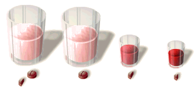

Toxicology Problem Set
Problem 5: Dose
For help to answer the question:
Who took the largest dosage of aspirin?
A. an adult woman who weighs 125 lb and took 300 mg of aspirin B. a teenage boy who weighs 135 lb and took 600 mg of aspirin C. a baby who weighs 20 lb and took 100 mg of aspirin D. a chihuahua who weighs 5 lb and took 50 mg of aspirin
Tutorial
|
The dose is the specific amount of a chemical that enters the body. Dosage is the amount of chemical per unit of body weight. Often the two words are used interchangeably.

In this diagram, body size is represented by the size of the glass. Dose is represented by the color of the liquid in the glass. Darker liquid indicates a higher dose. You can see that the smallest glass contains the highest dose even though it contains the smallest amount of aspirin. The smallest glass is like the chihuahua. |
Calculating dose
|
To calculate someone's dose, divide the amount of the hazard by the body weight. For example, the adult woman weighs 125 pounds and took 300 mg of aspirin. Her dose is 300 mg divided by 125 pounds or 2.4 mg/lb. It is important to express dose in terms of body weight because a small person who ingests the same amount of a chemical as a larger person actually receives a much higher dose. The concentration of the chemical in the small body is much higher than in the large body.
|


The Biology Project
The University of Arizona
Tuesday, March 30, 1999
Contact the Development Team
http://biology.arizona.edu
All contents copyright © 1997. All rights reserved.